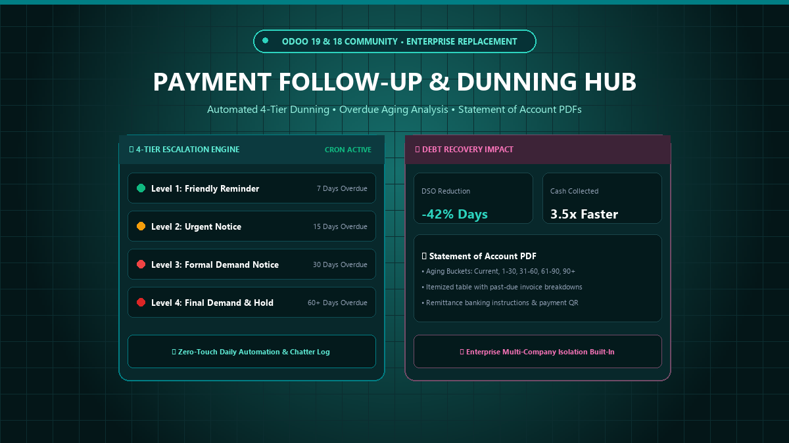
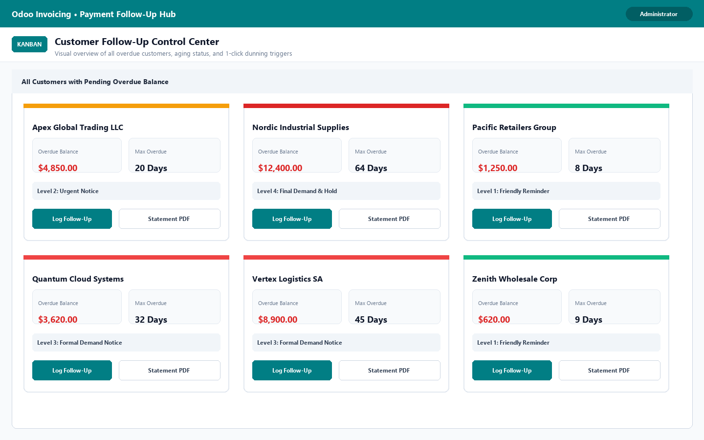
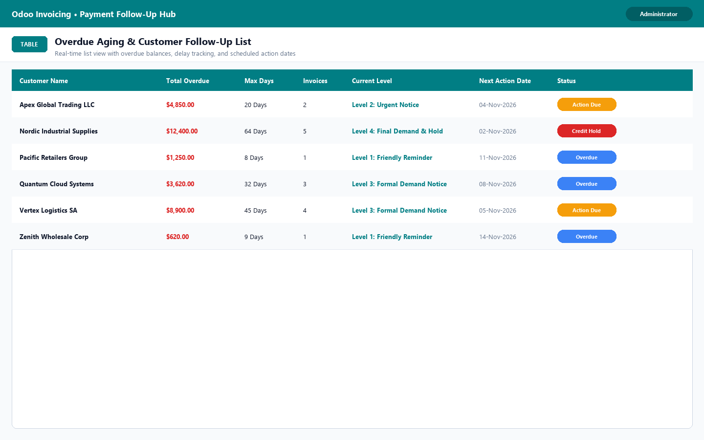
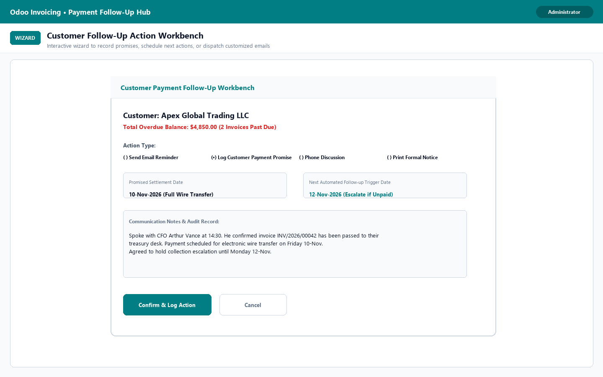
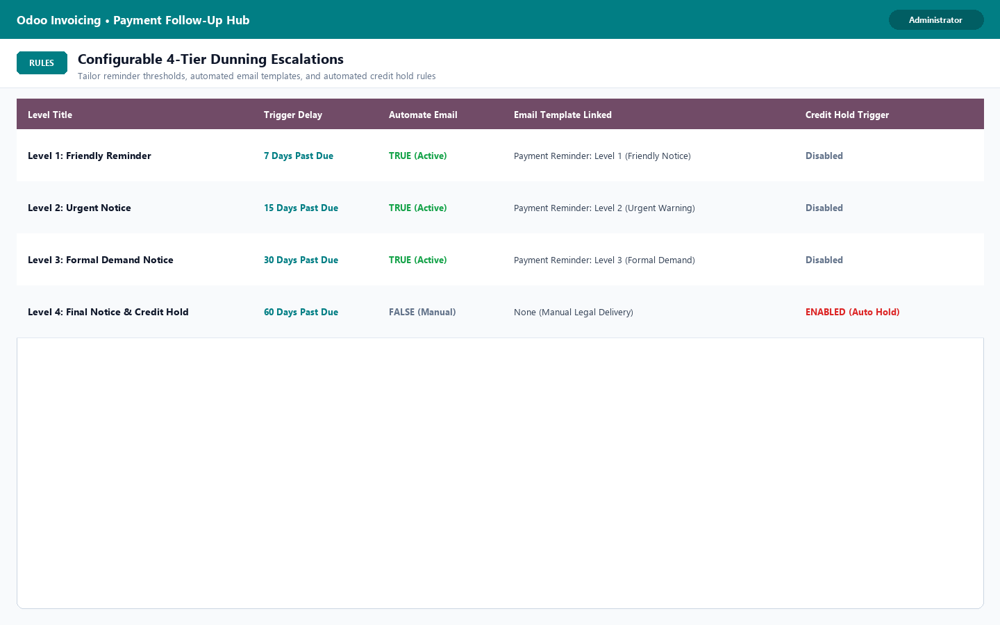
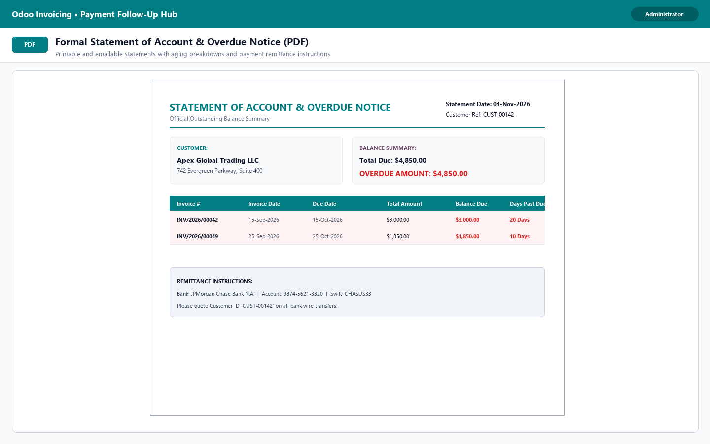
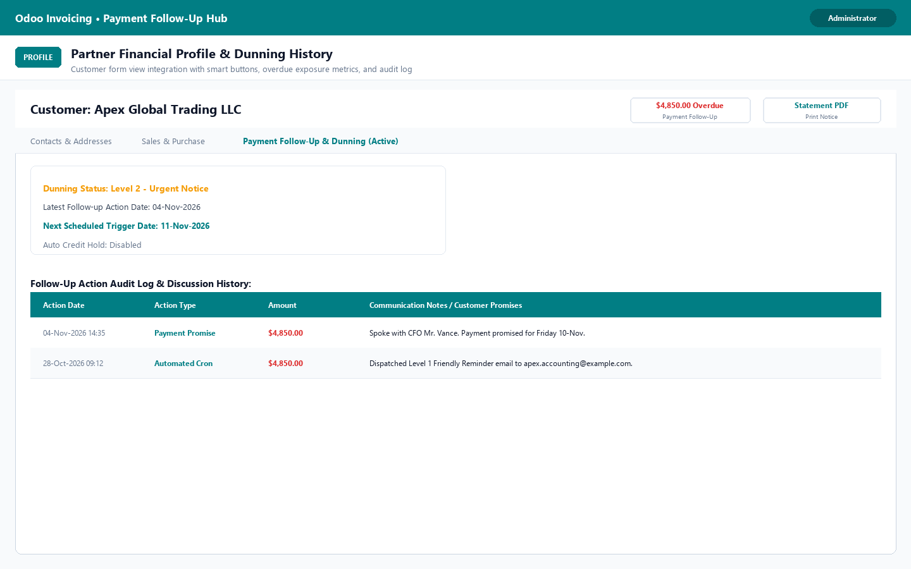

When Odoo moved customer follow-ups exclusively into Odoo Enterprise, Community users lost their payment collection engine. This enterprise hub restores automated 4-Tier Dunning Escalations, Overdue Aging Analysis, Interactive Action Workbenches, and Formal Statement of Account PDFs directly into Odoo Community.
Key Highlights
Core enterprise capabilities engineered to eliminate bad debt and accelerate cash collection.
Configurable escalation tiers: Friendly Notice (7d) → Urgent Notice (15d) → Formal Demand (30d) → Legal Escalation & Credit Hold (60d+).
Visual customer cards tracking overdue balance, max overdue days, active escalation level, next action date, and 1-click follow-up triggers.
Record customer payment promises, log telephone discussions, schedule next action triggers, or dispatch customized emails with zero fuss.
Professional PDF statement with overdue invoice breakdowns, aging buckets, total outstanding due, and bank remittance instructions.
Daily background cron identifies overdue invoices, determines applicable level, sends email reminders, and logs complete audit history.
Automatically flags high-risk accounts with a critical credit hold upon reaching severe delinquency to protect company cashflow.
Screenshots & Detailed Walkthrough
See how the module operates across real-world credit management scenarios.
Instant visual overview of all customers with overdue balances. Kanban cards highlight overdue amounts, max days overdue, current level badge, and 1-click action triggers.

Powerful table with color-coded status badges: Action Due Today, Overdue Balance, and Credit Hold Applied with quick filters for debt recovery officers.

Log phone discussions, record customer payment promises, set next follow-up dates, or dispatch customized email templates with instant chatter audit trails.

Fully customizable delay thresholds, automated email templates, notice descriptions, and automated credit hold flags tailored to your company policy.

Clean, formal PDF reports ready to print or email with customer details, outstanding balance summary, itemized past-due invoice list, and bank remittance instructions.

Seamless integration on standard customer form views with smart buttons for overdue balances, statement printing, and detailed communication history log.

Standard Community vs Our Dunning Hub
Why businesses choose this module over manual credit control.
| Feature Capability | Standard Community | Our Dunning Hub |
|---|---|---|
| Customer Payment Follow-Up Engine | ✖ Enterprise Only | ✔ Native Community Support |
| Multi-Tier Dunning Escalations | ✖ None | ✔ 4-Tier Automated Levels |
| Automated Daily Cron & Email Dispatch | ✖ Manual Email Writing | ✔ Zero-Touch Background Cron |
| Statement of Account PDF with Aging | ✖ Generic Invoices Only | ✔ Formal PDF with Aging & Bank QR |
| Payment Promise & Discussion Log | ✖ External Spreadsheets | ✔ Dedicated Action Workbench |
| Automated Credit Hold Protection | ✖ Manual Verification | ✔ Automatic Level 4 Hold Flag |
Got questions or need custom dunning workflows? Get in touch.
bhargavipasham2000@gmail.com